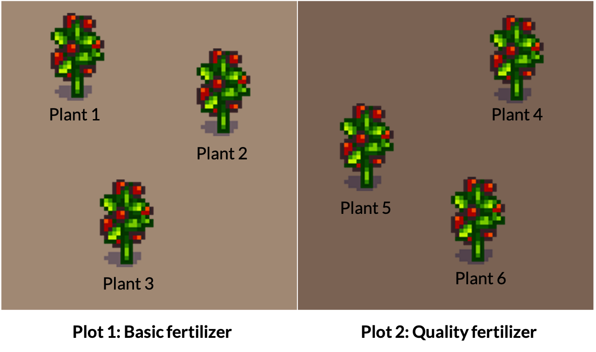
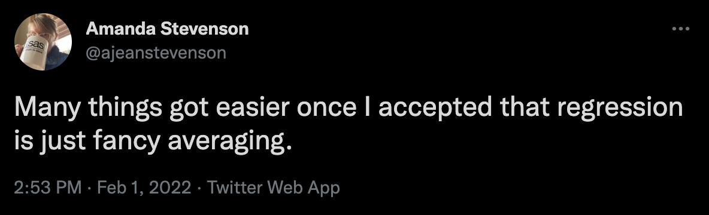

Welcome to Statdew Valley!
You’re grandmother has asked you to take over her old farm plot in Statdew Valley. Armed with statistical knowledge, you set out to begin your new life!
There are two of datasets for you to analyze to better understand the operation of your farm.
Note: The final ‘hint’ for code chunks will be the solution.
Yes, this is totally an homage to Stardew Valley. Have I played? No, but à la Girlfriend Reviews on YouTube, this is based on “what it’s like to live with someone who plays Stardew Valley.”
Optional: Create your 16 bit character
You can use R for so much more than just running regressions! This section is totally optional, and definitely not assessed.
- Copy this code into a separate .Rmd. It won’t work from within a Shiny App (this interactive).
- Save the .Rmd and make sure it is in a folder, not in your Home directory. Rmd files in your Home directory will cause interactives to fail.
- Choose an image to pixelate to get your character. You’ll need to have a URL for it (or you could edit the code for a local file). I think it is easiest to upload to GitHub (or Google Photos) and then right click to copy the image address.
- Play with the Shiny app interface for the pixelart package to help you get the settings right.
- Update these settings in the code below.
- [Super super optional] Post your character on the optional discussion board for this week. If you have a Stardew Valley character or some other pixel art of yourself, you can share that, too. This is just for fun, no requirement to participate. Please be sensible about making sure any images are appropriate. Don’t use images of other people, etc.
# Install pixel art
# More info: https://privefl.github.io/pixelart
devtools::install_github("privefl/pixelart")
# Install tidyverse if you haven't
# install.packages("tidyverse")
# Install magick if you haven't
# install.packages("magick")
library(magick)
library(pixelart)
library(tidyverse)
# Upload a profile picture of yourself to GitHub or another service where you can then get the image address. With GitHub, you'll need to add ?raw=TRUE to the end of the URL (it is also what you get if you right click and select 'Copy Image Address' )
# Here is an example of mine
url = "https://github.com/sta303-bolton/other/blob/main/lb-for-statdew-valley.png?raw=true"
# Run Shiny app for pixel art models
# This should open in a new browser window
# You can use it to play around with the settings and once you're mostly happy, update the settings below based on them
pixelart::run_pixelart()
url = "https://github.com/sta303-bolton/other/blob/main/lb-for-statdew-valley.png?raw=true"
resize1 = 300
resize2 = 40
ncolors = 15
color_bg = "#FFFFFF"
saturation = 70
degrees = 0
left = 0
top = 0
right = 0
bottom = 0
# I made some changes to the plot_color_matrix function in the pixel art package to produce the look I wanted
# Most of this code is the same as from that package. Credit to: Florian Privé, author and creator of the package.
plot_color_matrix <- function(raster){
rows <- seq_len(nrow(raster))
cols <- seq_len(ncol(raster))
cbind(expand.grid(y = rev(cols), x = rows), expand.grid(color = t(raster),
stringsAsFactors = FALSE)) %>% ggplot() + geom_tile(aes_string("x",
"y", fill = "I(color)")) + coord_equal() + theme_void()
}
im0 <- url %>% magick::image_read() %>% magick::image_background(color_bg) %>%
crop(left = left, right = right, bottom = bottom, top = top) %>%
magick::image_rotate(degrees) %>% magick::image_modulate(saturation = 120)
im1 <- downsize(im0, resize1)
# this can take a while to run
kmeans <- kmeans_colors(im1, ncolors)
im2 <- downsize(im0, resize2)
plot_color_matrix(colors_kmeans(im2, kmeans))Is this GOOD character pixel art? No. But I think it is cool that you can do image manipulation in R!
Task 1: Tomatoes (part 1)
Suppose your farm has a small experimental tomato patch. You are interested in knowing if there is any difference between the weight of tomatoes produced from plants that are fertilized with basic fertilizer vs tomatoes produced from plants that are fertilized with quality fertilizer.
Tee patch has two plots, one for each fertilizer type. In each plot there are three tomato plants (all of the same species). Other growth influencing factors, like light exposure and precipitation are the same for each plot.
4 tomatoes were chosen at random from each plant and weighed (reported in grams). This data is stored in tomatoes.
 Layout of tomato patch
glimpse(tomatoes)## Rows: 24
## Columns: 3
## $ plant <int> 1, 1, 1, 1, 2, 2, 2, 2, 3, 3, 3, 3, 4, 4, 4, 4, 5, 5, 5, 5,…
## $ fertilizer <chr> "basic", "basic", "basic", "basic", "basic", "basic", "basi…
## $ weight <dbl> 123.0, 124.0, 128.0, 125.0, 135.0, 140.0, 129.0, 131.0, 146…Plot the tomat-ah dat-ah
Create a plot with plant on the x axis, weight on the y axis and coloured by fertilizer type. Choose a sensible geometry. I also used theme_minimal() because I like the way it looks. This is just an exploratory plot for our benefit, so it can be a bit rough. No title, etc.
# Any trouble with loading the data? Paste this in to your coding area
tomatoes <- tibble(
plant = rep(1:6, each = 4),
fertilizer = rep(c("basic", "quality"), each = 12),
weight = c(123, 124, 128, 125,
135, 140, 129, 131,
146, 143, 142.5, 145,
135, 136, 150, 140.5,
160, 159, 161, 170,
162, 161, 152, 151))tomatoes %>%
ggplot(aes(x = plant, y = weight, colour = fertilizer)) +
# add some more code heretomatoes %>%
ggplot(aes(x = plant, y = weight, colour = fertilizer)) +
geom_point() +
theme_minimal()Note: We’re going to take a pretty STA302 approach here. We’ll start out by doing something WRONG and then improve it in the next section, still under the least squares framework. We can do this BECAUSE this is what is called a ‘balanced data’ design. That is, there is an equal number of observations in each combination of levels: 4 tomatoes per plant per fertilizer type plot.
The WRONG approach: fixed effects only
Fertilizer is our variable of interest, so we need to include it in the model, but we might expect that tomatoes from the same plant are more similar to each other in weight than tomatoes from different plants. This also seems believable based on the plot. So, let’s start by proposing a model like this:
Model
\[y_{i} = \alpha_j + \beta_k + \epsilon_{i} \]
where \(y_{i}\) is the weight of the \(i^{th}\) tomato from plant \(k\) in fertilizer plot \(j\). Here, \(\alpha_j\) is the population mean weight for fertilizer plot \(j\) and \(\beta_k\) is the difference of plant \(k\) from that mean.
The two longer horizontal lines in this graph represent \(\alpha_{basic}\) and \(\alpha_{quality}\) respectively. Each plant also has a shorter horizontal line shown which represents the mean weight of tomatoes from that plant. The distances (shown with the 6 vertical lines) are the \(\beta\) values discussed above. (You’re not required to be able to create this plot right now. If you’re curious you can see the code in the .Rmd version of this activity.)

Figure: Visual representation of the equation for this data
Now, this probably looks a little different to how you’ve been writing models, but I hope it makes sense as describing the data that we’re interested in.
Let’s try some models: Part 1
- Fit a model called
tom1withweightas the outcome andfertilizerandplantas the predictors. Make sureplantis treated as a categorical (factor) variable, not numeric. - Fit a model called
tom2withweightas the outcome and and justfertilizeras the predictor. - Compare these models using ANOVA.
# You can make a variable a factor by putting it in as_factor() from the forcats package (or as.factor() from base) right in your linear model.tom1 <- lm(weight ~ as_factor(plant) + fertilizer, data = tomatoes)
tom2 <- lm(weight ~ fertilizer, data = tomatoes)
anova(tom1, tom2)To emphasize the problem further, let’s fit another model
- Fit
tom3, that predictsweightwithplant(as a factor) as the only independent variable. - Run an anova to compare
tom1andtom3
tom1 <- lm(weight ~ as_factor(plant) + fertilizer, data = tomatoes)tom1 <- lm(weight ~ as_factor(plant) + fertilizer, data = tomatoes)
tom3 <- lm(weight ~ as_factor(plant), data = tomatoes)
anova(tom1, tom3)Summary
Approaching our model in this way has several problems.
- Our model isn’t identifiable. In fact, if you run
summary(tom1), you’ll see that the fertilizer coefficient is NA because of this! Oops. - What we can model isn’t that useful to us, because it doesn’t generalize to any new plants. (E.g., we can’t say anything about a plant 7.)
- If we just fit the model is fertilizer, we know our independence assumption is violated and don’t know how much of a problem that will be for us. (Violated because we know observational units, tomatoes, are not independent when they come from the same plant.)
So, do we give up on our first farming task?
Nope!
Task 1: Tomatoes (part 2)
The RIGHT approach: mixed effects
To approach this problem better, let us take a step back and realize that we really want to treat fertilizer and plant differently. Fertilizer is a classic fixed effect kind of variable. We want to be able to treat the parameter as fixed and we want to be able to use it to generalize so we can make claims about whether or not there is a difference between the fertilizers. Meanwhile, we’re not really that interested in the effects of each of these plants. We want information that will help us make decisions for future plants. What if we plant 20 new tomato plants? We want to be able make data driven claims in that case, too, not just for these 6 plants. BUT we also can’t ignore the plant effects (independence assumption, as discussed).
Our solution? Treat plant effect as a random variable. We can think of these 6 plants as drawn from the population of all tomato plants (of this species, in these conditions). We can then understand each of their effects as an independent observation from this distribution.
Decision: We will model fertilizer as a fixed effect and plant as a random effect.
Model
This looks like: \[ y_i = \alpha_j + b_k + \epsilon_i\]
where, again, \(y_{i}\) is the weight of the \(i^{th}\) tomato from plant \(k\) in fertilizer plot \(j\). Here, \(\alpha_j\) is again the population mean weight for fertilizer plot \(j\) BUT \(b_k \sim N(0, \sigma_b^2)\) and \(\epsilon_i \sim N(0, \sigma^2)\). \(b_k\) and \(\epsilon_i\) are mutually independent.
Because we’re in ‘statistical easy mode’ (balanced design) with this example, we can actually achieve all of this in the framework of ordinary least squares you learned in STA302. FIRST we have to do some data manipulation.
- Create a new dataset called
tom_aggfrom thetomatoesdataset. - Group by both fertilizer and plant. Because plant is fully nested in fertilizer, this is just a convenient way to keep the fertilizer variable in the dataset.
- Summarize so you get the mean tomato weight for each plant. Call this variable
weight_avg. - Run
glimpse(tom_agg).
Before you run the code, see if you can predict what the output should look based on these instructions.
# you can summarize to get the mean of a numeric variable with the following:
summarize(weight_avg = mean(weight), .groups = "drop")
# Note: you will have to make sure you pipe (%>%) the correctly group data in to this.
# The .groups = "drop" will just prevent a warning as it explicitly says we don't want to keep the grouping by plant.tom_agg <- tomatoes %>%
group_by(fertilizer, plant) %>%
summarize(weight_avg = mean(weight), .groups = "drop")
glimpse(tom_agg)Now that you’ve created the new appropriately aggregated dataset, tom_agg, use it to fit a model called tom_final that predicts weight_avg from fertilizer. Then run summary() on it. Calculate a 95% confidence interval for the effect of using quality fertilizer over basic fertilizer.
# the formula should be weight_avg ~ fertilizer# you can find the 95% confidence interval for the coefficient
# for the quality fertilizer using:
### confint(tom_final)tom_final <- lm(weight_avg ~ fertilizer, data = tom_agg)
summary(tom_final)
confint(tom_final)Variance of our random effect
When we are conducting mixed effects models, we’re often interested in the variability of our random effects. So, we want to estimate \(\sigma_b^2\) from the model above.
Firstly, we can think about what variability that isn’t explained by our fixed effects. This is our residual variance. We get this from squaring the residual standard error in tom_final. This value is actually partitioned into two independent sources of variability, \(\hat{\sigma}^2\), the variance of our random error, and \(\hat{\sigma_b}^2\), the variance of our random effect.
While you can derive this yourself if you like, let’s also take as true the following: \[\frac{\text{RSS}_{tom\_final}}{4} = \hat{\sigma_b}^2 + \frac{\hat{\sigma}^2}{4} \].
The following just reruns the final code from the tasks above so I can use it.
tom_agg <- tomatoes %>%
group_by(fertilizer, plant) %>%
summarize(weight_avg = mean(weight), .groups = "drop")
tom_final <- lm(weight_avg ~ fertilizer, data = tom_agg)
summary(tom_final)##
## Call:
## lm(formula = weight_avg ~ fertilizer, data = tom_agg)
##
## Residuals:
## 1 2 3 4 5 6
## -9.2917 -0.5417 9.8333 -12.7500 9.3750 3.3750
##
## Coefficients:
## Estimate Std. Error t value Pr(>|t|)
## (Intercept) 134.292 6.091 22.048 2.5e-05 ***
## fertilizerquality 18.833 8.614 2.186 0.0941 .
## ---
## Signif. codes: 0 '***' 0.001 '**' 0.01 '*' 0.05 '.' 0.1 ' ' 1
##
## Residual standard error: 10.55 on 4 degrees of freedom
## Multiple R-squared: 0.5445, Adjusted R-squared: 0.4306
## F-statistic: 4.781 on 1 and 4 DF, p-value: 0.09406# Get the RSE and square it
overall_var <- summary(tom_final)$sigma^2
overall_var## [1] 111.2917Secondly, we actually have an estimate of \(\hat{\sigma}^2\) from the model we fit right at the beginning, tom1. This is the variance we can’t account for even after fitting both plant and fertilizer as fixed effects.
\(\hat{\sigma}^2 = \frac{\text{RSS}_{tom1}}{\text{DF}_{tom1}}\)
(This is just from our usual linear model theory. \(\hat{\sigma} = \text{RSE} = \sqrt{\frac{\text{RSS}}{DF}}\), so \(\hat{\sigma}^2 = \text{RSE}^2 = \frac{\text{RSS}}{DF}\))
tom1 <- lm(weight ~ as.factor(plant) + fertilizer, data = tomatoes)
summary(tom1)##
## Call:
## lm(formula = weight ~ as.factor(plant) + fertilizer, data = tomatoes)
##
## Residuals:
## Min 1Q Median 3Q Max
## -5.500 -2.938 -1.062 2.156 9.625
##
## Coefficients: (1 not defined because of singularities)
## Estimate Std. Error t value Pr(>|t|)
## (Intercept) 125.000 2.391 52.279 < 2e-16 ***
## as.factor(plant)2 8.750 3.381 2.588 0.01857 *
## as.factor(plant)3 19.125 3.381 5.656 2.30e-05 ***
## as.factor(plant)4 15.375 3.381 4.547 0.00025 ***
## as.factor(plant)5 37.500 3.381 11.090 1.78e-09 ***
## as.factor(plant)6 31.500 3.381 9.316 2.63e-08 ***
## fertilizerquality NA NA NA NA
## ---
## Signif. codes: 0 '***' 0.001 '**' 0.01 '*' 0.05 '.' 0.1 ' ' 1
##
## Residual standard error: 4.782 on 18 degrees of freedom
## Multiple R-squared: 0.9047, Adjusted R-squared: 0.8783
## F-statistic: 34.19 on 5 and 18 DF, p-value: 1.395e-08# Get the RSE and square it
error_var <- summary(tom1)$sigma^2
error_var## [1] 22.86806The unexplained variability in our final model can be partitioned into the plant-to-plant variability and the random error variability. The random error variance is divided by the degrees of freedom of the final model. \[\text{RSE}_{tom\_final}^2 = \frac{\text{RSS}_{tom\_final}}{4} = \hat{\sigma_b}^2 + \frac{\hat{\sigma}^2}{4}\]
\[ = \hat{\sigma_b}^2 + \frac{\text{RSS}_{tom1}}{18}\cdot\frac{1}{4}\]
\[\hat{\sigma_b}^2 = \text{RSE}_{tom\_final}^2 - \text{RSE}^2_{tom1} \cdot\frac{1}{4}\]
# Let's calculate the variance of the plant effect
plant_effect_var <- overall_var - error_var/4
plant_effect_var## [1] 105.5747So, \(\hat{b} \sim N(0,\) 105.57 \()\) . As you might expect, a lot of the variance in tomato weight that we can’t account for just based on the fertilizer is due to plant-to-plant variation
Task 2: Life is sweet as honey
Your grandmother was a bit eccentric when it came to farm management. She swore that her bees produced more honey if she played them music in the morning. In fact, she even mentioned that she thought they particularly liked K-pop.
She left you some data that she thinks proves this. While the sample size isn’t that large, you decide to take a look anyways. The data is called honey and records the honey produced each month for each of her 6 hives (in grams). Each hive listened to each of the song options (Butter by BTS, Adagio in B minor by Mozart and No music) for a month, three times. The order was randomized for each hive. It took 9 months to collect this data and the information your grandmother left you says honey production should have been fairly constant over this period and that all the hives experienced the same weather conditions, food access, etc.
(Note: this is definitely not accurate to how beekeeping or weather actually works…but ignore this for our purposes.)

glimpse(honey)## Rows: 54
## Columns: 3
## $ hive <fct> 1, 1, 1, 2, 2, 2, 3, 3, 3, 4, 4, 4, 5, 5, 5, 6, 6, 6, 1, 1, 1,…
## $ song <fct> No music, No music, No music, No music, No music, No music, No…
## $ honey_g <dbl> 196.56, 199.58, 200.71, 195.80, 199.58, 200.71, 226.80, 227.55…Wrangle and plot the data
Wrangle
- Wrangle the honey data so that the
songvariable is a factor in this order: No music, Adagio in B minor by Mozart and Butter by BTS. - Make
hivea factor variable also. - Save this over the original honey dataset.
- Then, using your new version of the
honeydataset, create a new dataset calledhoney_agg_int, where you group byhiveandsongand summarize to find the average amount of honey produced by each hive while listening to a given song. Call your averaged variablehoney_avg.
# This hint is with respect to the factor variables.
# For song I used fct_relevel inside a mutate
mutate(song = fct_relevel(song, "No music", after = 0))
# For hive I just had to set it to be a factor
mutate(hive = as_factor(hive))
# In both cases I am saving over the original variables.# the new honey dataset should be created like this
honey <- honey %>%
mutate(song = fct_relevel(song, "No music", after = 0)) %>%
mutate(hive = as_factor(hive)) # the aggregated dataset should be created like this
honey_agg_int <- honey %>%
group_by(hive, song) %>%
summarize(honey_avg = mean(honey_g), .groups = "drop") honey <- honey %>%
mutate(song = fct_relevel(song, "No music", after = 0)) %>%
mutate(hive = as_factor(hive))
honey_agg_int <- honey %>%
group_by(hive, song) %>%
summarize(honey_avg = mean(honey_g), .groups = "drop") Plot
- Plot the
honey_agg_intdata withsongon the x axis andhoney_avgon the y axis. - In your aesthetic, you should also colour by hive and group by hive. (See the hint if you get stuck).
- Use the point and line geometries.
- Use
theme_minimal()if you like.
# This is what my aesthetic mapping looks like
# aes(x = song, y = honey, colour = hive, group = hive)# the two geometries you want are geom_point() and geom_line()# This assumes you've run the correct code for the wrangling above
honey_agg_int %>%
ggplot(aes(x = song, y = honey_avg, colour = hive, group = hive)) +
geom_point() +
geom_line() +
theme_minimal()We’ve actually made an interaction plot for our data. There is a function in the core stats package that also does this for us.
interaction.plot(honey$song, honey$hive, honey$honey_g)
This data is an example of crossed effects, because every hive experiences every level of the ‘treatment’, i.e. each hive listens to each song.
Model formula
This looks like: \[ y_{ijk} = \mu + \alpha_i + b_{j} + + (\alpha b)_{ij} + \epsilon_{ijk}\]
where \(y_{ijk}\) is the amount of honey produced (in grams) in the \(k^{th}\) month by the \(j^{th}\) hive while listening to song \(i\). Here, \(\mu\) is the grand mean of honey production, \(\alpha_i\) are the \(I\) fixed effects for song and \(b_j\) are the random effects for hive \(j\). \((\alpha b)_{ij}\) are the \(IJ\) interaction terms for the interaction between the the hive and the song. What does this represent here? Well, maybe some hives respond to a certain song quite differently to other hives. \((\alpha b)_{ij}\) is a random effect because any term involving a random effect must also be a random effect. \((\alpha b)_{ij} ~ \sim N(0, \sigma^2_{\alpha b})\), \(b_j \sim N(0, \sigma_b^2)\) and \(\epsilon_{ijk} \sim N(0, \sigma^2)\). All the random effects are mutually independent random variables.
Fit the models
- Fit an interaction model (main effects and interactions) to predict honey production based on
songandhive. Call itbee_int_mod.
- Fit a main effects (no interactions) model to predict honey production based on
songandhive(no interaction). Call itbee_main.
- Compare these two models with ANOVA.
bee_int_mod <- lm(honey_g ~ song*hive, data = honey)
bee_main <- lm(honey_g ~ song + hive, data = honey)
anova(bee_int_mod, bee_main)Model with our aggregated data
- Run a new model using the
honey_agg_intdata, wherehoney_avgis the response and song and hive are fixed effects, no interactions. Save the model asbee_agg_mod. - Run an ANOVA on
bee_agg_mod.
bee_agg_mod <- lm(honey_avg ~ song + hive, data = honey_agg_int)
anova(bee_agg_mod)The very low p-values you’ll see above suggest that we can also reject \(H_0: \sigma^2_b = 0\) and \(H_0: \alpha_{BTS} = \alpha_{Mozart} = \alpha_{no\ song} = 0\) because it seems plausible that there is hive-to-hive variation, and that there are differences in honey production between the songs.
Describing our residuals
Recall the formula for the residual sum of squares (RSS):
\[RSS = \Sigma^{n}_{i=1} \color{green}{e_i}^2 = \Sigma^{n}_{i=1} (\color{orange}{y_i} - \color{blue}{\hat{y_i}})\]
where:
- \(\color{green}{e_i}\) is the residual for observation \(i\)
- \(\color{orange}{y_i}\) is the observed value of the response variable for the \(i^{th}\) observation
- \(\color{blue}{\hat{y_i}}\) is the predicted value (from the model) for the \(i^{th}\) observation
Calculate the residual sum of squares for the bee_int_mod model. Save it as rss_int.
# Hint
# The predict() function applied to the model object will give you a vector of predicted values, in the same order as the data you used to fit the model
predict(bee_int_mod)# Hint
# Gimme the honey, honey! Pull the the actual observed values from the original data set with the $
honey$honey_g# Solution
rss_int <- sum((honey$honey_g - predict(bee_int_mod))^2)\[RSE = \sqrt{\frac{RSS}{\color{red}n-\color{blue}p-1}}\]
where:
- \(RSS\) is the residual sum of squares
- \(\color{red}n\) is the number of observations in your dataset (that are being used for the model, must be complete cases for the variables being used)
- \(\color{blue}p\) is the number of coefficients being estimated in our model (not including the intercept)
Calculate the RSE for the bee_int_mod model.
- Start by getting the sample size from the data (i.e., don’t ‘hard code’ it). Save it as
n_int.- Hint:
nrow()is a useful function for finding the number of rows of a dataset.
- Hint:
- Calculate the degrees of freedom for your model. This is ‘easy’ (for a given value of easy…) to do by hand for balanced designs, but not something you’ll do for more complicated models in practice.
- Hint: \(n-p-1\)
- Save the value as
df_int
- Finally, use these objects and
rsscalculated above to calculate the RSE. Save the object asrse_int.- You can check if you are right by comparing to the RSE from the fitted model:
Residual standard error: 3.634 on 36 degrees of freedom
- You can also check it directly with
summary(bee_int_mod)$sigma
- You can check if you are right by comparing to the RSE from the fitted model:
# There are 54 observations
# There are 17 coefficients being estimated + the intercept
# n - p - 1 will be the same as n - IJ here (main effects and interactions)
IJ <- 6*3
# Optional: Here is a handy way to count coeffs, note the intercept is included in the count
nrow(summary(bee_int_mod)$coefficients)# Number of observations
n_int <- nrow(honey)
n_int
# Degrees of freedom for the model
df_int <- n_int - nrow(summary(bee_int_mod)$coefficients)
df_int
# Calculate RSE
rse_int <- sqrt(rss_int/(df_int))
rse_int
# Check RSE from the model
summary(bee_int_mod)
# We can pull the value directly from the model summary with $sigma
summary(bee_int_mod)$sigmaCalculating our random effect variances
Overview
In this section I’m just going claim a couple equations for how we can partition (separate into components) the unexplained variation in the models we have fit.
We will have a variance component for every one of our random effects (and interactions between a fixed and random effect are also random effects themselves!) as well as the overall residual variance.
We can use this to claim what proportion of variance is explained by our different random effects and what proportion remains unexplained by our variables.
I practice, we’ll let R handle this for us, especially as things will get a little messier when we leave the safety of balanced designs. See the Wood reading referenced in the credits if you want to cover this further now. Optional, not assessed.
Basically, I want you to take away from this section that we can estimate how much our different sources of variation are each contributing to our overall variation.
Unexplained variance after fitting the interaction model
As we saw above, our unexplained variability, after fitting the interaction model (the most complicated linear model possible for this data), bee_int_mod, gives us our \(\sigma^2\), i.e., the variability of the error term is \(\sigma^2 = 3.63^2\).
Save the squared residual standard error from the bee_int_mod model as var_int.
# Solution
var_int <- summary(bee_int_mod)$sigma^2
var_intRSE for main model
Next, we want to consider the what portion of the variability is explained by the interaction of hive and song. Our bee_agg_mod residual variance will come from two sources: the variance that CAN be explained by the interaction of hive and song AND the variability we cannot explain (even with out most complicated model), our random error.
\[\text{RSE}_{bee\_agg}^2 = \sigma_{\alpha b}^2 + \frac{\sigma^2}{K} \]
So, \(\text{RSE}_{bee\_agg}\) is the sigma value calculated from our main effects only model on the aggregated data, and \(K\) is the number of observations at each level of our interaction, i.e., the number of levels we have averaged over in aggregating this data. We want this value as we can use it to take the average of the squared errors from our interaction model (remember that \(sigma^2\) is the RSE squared.)
We can get \(K\) from the context, by understanding that each hive was exposed to each song for 3 months and honey production was measured monthly. OR we can remember that this design is balanced and divide the total sample size (\(n = 54\)) by the number of combinations (levels of interaction) which will be 6 hives times 3 songs, which is then \(\frac{54}{6\cdot 3} = 3\).
Doing some rearranging, we now can calculate \(\sigma_{\alpha b}^2\) from other values we have available to us.
\[\sigma_{\alpha b}^2 = \text{RSE}_{bee\_agg}^2 - \frac{\sigma^2}{K} = \] 198.75
Calculate \(\sigma_{\alpha b}^2\) and save it as var_ab.
# Solution
var_ab <- summary(bee_agg_mod)$sigma^2 - var_int / 3
var_abHive-to-hive variance
Finally, to get \(\sigma^2_{b}\) we do one final aggregation and model.
Start by creating a new dataset called honey_agg_hive.
- Start with the
honeydata
- Group by
hive
- Use summarize to get the
honey_avg_hive- You can use
.groups = "drop"as an argument in yoursummarizecall if you are getting a message about dropping groups.
- You can use
# Solution
honey_agg_hive <- honey %>%
group_by(hive) %>%
summarize(honey_avg_hive = mean(honey_g))
honey_agg_hiveOnce you have your honey_agg_hive dataset, use it to fit an intercept-only model, saved as bee_hive_mod that effectively just calculate one coefficient, the grand mean of honey production in our data. The RSE for this model is really the same as the standard deviation of average honey production, hive-to-hive.
bee_hive_mod <- lm(honey_avg_hive ~ 1, data = honey_agg_hive)
summary(bee_hive)
# Notice that the RSE here is just the SD of the average honey production hive-to-hive
sqrt(var(honey_agg_hive$honey_avg_hive))So now we can take our hive-to-hive variability subtract the variability explained by the song and hive main effects, and find the variability in honey output hive-to-hive not explained by song or song/hive interactions. We are dividing by I (the number of songs) because we are averaging across them.
\[ \sigma_b^2 = \text{RSE}_{bee\_hive}^2 - \frac{\text{RSE}_{bee\_agg}^2}{I}\]
# hive to hive variation, not explained by song or song/hive interaction
var_hive <- summary(bee_hive_mod)$sigma^2 - (summary(bee_agg_mod)$sigma^2)/3
var_hiveSummary of all our calculated error variances
# variance in honey production explained by the interaction of song and hive
var_ab <- summary(bee_agg_mod)$sigma^2 - var_int / 3
var_ab## [1] 198.7458# variance in honey production explained by hive to hive variance
var_hive <- summary(bee_hive_mod)$sigma^2 - (summary(bee_agg_mod)$sigma^2)/3
var_hive## [1] 326.595# residual variance (unexplained)
var_int <- summary(bee_int_mod)$sigma^2
var_int## [1] 13.20828We can all talk about the proportion of variance explained by each of our sources of variation. This is also called intraclass correlation coefficient (ICC) or the variance partition coefficient (VPC). We can calculate it by finding the sum of all these variances, and setting that value as our denominator.
tibble(Source = c("song:hive", "hive", "residual"),
`Proportion of variance explained` = c(
var_ab / (var_ab + var_hive + var_int),
var_hive / (var_ab + var_hive + var_int),
var_int / (var_ab + var_hive + var_int))) %>%
knitr::kable()| Source | Proportion of variance explained |
|---|---|
| song:hive | 0.3690394 |
| hive | 0.6064349 |
| residual | 0.0245257 |
Optional
Do you think you have enough information to come to a conclusion about whether the playing music improves honey production? Do your grandmother’s bees actually like k-pop best of the options?
Summary
Note the below notation is is based on using least squares and treating all variables as fixed effects. This isn’t the way you would explain a linear model in practice, but I hope helps you see how we are thinking about partitioning our variance. It also helps remind us that regression is just fancy averaging.

Note: The \(\cdot\) you’ll see in some of the following subscripts indicate where we are aggregating and averaging across that level of the data.
Full interaction model (includes main effects) (bee_int_mod)
| In R | Notation | RSE |
|---|---|---|
lm(honey_g ~ song*hive, data = honey) |
\(y_{ijk} = \mu + \alpha_i + b_j + (\alpha b)_{ij} + \epsilon_{ijk}\) Traditional linear regression \(y_{ijk} = \beta_0 + \beta_1 \text{song}_i + \beta_2\text{hive}_j + \beta_3\text{song}_i\text{hive}_j + \epsilon_{ijk}\)
|
\(RSE^2\) is \(\sigma^2\) is the unexplained variation after fitting the most complicated model. |
Main effects only model, on hive/song aggregated data (bee_agg_mod)
| In R | Notation | RSE |
|---|---|---|
lm(honey_g ~ song + hive, data = honey_agg) |
\(y_{ij\cdot} = \mu + \alpha_i + b_j + \epsilon_{ij}\) where \(\epsilon_{ij} = (\alpha b)_{ij}+\frac{1}{K}\Sigma_{k=1}^n\) Traditional linear regression \(y_{ij\cdot} = \beta_0 + \beta_1 \text{song}_i + \beta_2\text{hive}_j + \epsilon_{ij}\) |
The \(RSE^2\) here is the unexplained variation in the average honey production after accounting for the main effects of song and hive. We will use it to help find \(\sigma_{\alpha b}\). |
Intercept only model for hives averages (bee_hive_mod)
| In R | Notation | RSE |
|---|---|---|
(note aggregated dataset) |
\(y_{\cdot j \cdot} = \mu + \frac{1}{I}\Sigma^I_{i = 1}\alpha_i + \epsilon\) where: \(\epsilon_j = b_j + \frac{1}{I}\Sigma\epsilon_j\) Traditional linear regression \(y_{\cdot j\cdot} = \beta_0 + \epsilon_{j}\) |
The \(RSE^2\) here is hive-to-hive variation in average honey output (without taking into account the interaction between hive and song). We will use it to help find \(\sigma_{b}\). |
Where to next?
We’ve done pretty much everything we can while remaining in the ordinary least squares context, and even in the simplest examples, all the aggregating and model fitting we’re doing will get a little tedious. Now we will turn to fitting linear mixed models more in more sophisticated ways with a specialist package.
The models we’ll be fitting will rely on maximum likelihood methods.
Credits
- The commentary for this activity draws heavily on section 2.1 of Wood, S. Generalized Additive Models: An Introduction with R, 2nd Edition. 2017. https://ebookcentral-proquest-com.myaccess.library.utoronto.ca/lib/utoronto/detail.action?docID=4862399 (requires you to log in with your UTORid).
- Overall concept based on the Stardew Valley game.
- Stardew Valley images from https://stardewcommunitywiki.com.